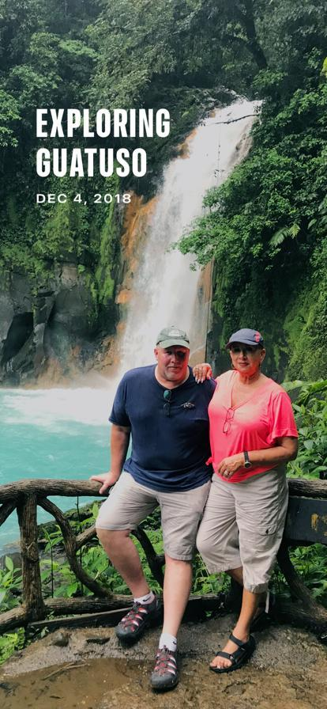

A Mother's Love
This website is for you mom
A semi-responsive website using flex
Remember how it looks so you will notice my improvements.

glimpse of my beautiful mom

Always enjoyed a good glass of wine!

The first time her sister came to visit her in Costa Rica

This is where I get my good looks from
You are gone, but thank you for all these soft, sweet things you left behind. In my home, in my head, in my heart."
—Nikita Gill
Call to Action
Sign up to support local hospitals in under represented communities